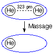
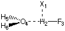

|
He - - - - - - He |
#RHF/6-31G scf=tight Massage energy of helium in the basis set of the helium dimer 0 1 He1 He2 1 r2 r2=3.230 1 Nuc 0.0 |  |
#P HF/6-31G(d) opt=Z-Matrix HF/6-31G(d) opt H2O/HF complex 0 1 X1 H2 1 1. F3 2 r3 1 90. O4 2 r4 1 a4 3 180. H5 4 r5 2 a5 1 d5 H6 4 r5 2 a5 1 -d5 r3=0.92150424 r4=1.80289277 r5=0.94849694 a4=97.1802224 a5=115.11027415 d5=117.81295527 |  |
| method | r(2-4) [pm] | Eint [kJ/mol] | Edef [kJ/mol] | Eint,cp [kJ/mol] |
|---|---|---|---|---|
| HF/STO-3G | 167.4 | -31.4 | +0.21 | +0.2 |
| HF/3-21G | 161.5 | -70.7 | +1.42 | -52.0 |
| HF/6-31G(d) | 180.3 | -38.8 | +0.4 | -34.6 |
| HF/6-31G(d,p) | 181.1 | -37.9 | +0.4 | -33.4 |
| HF/6-31+G(d,p) | 180.2 | -36.3 | +0.5 | -33.0 |
last changes: 21.12.2005, HZ questions & comments to: zipse@cup.uni-muenchen.de